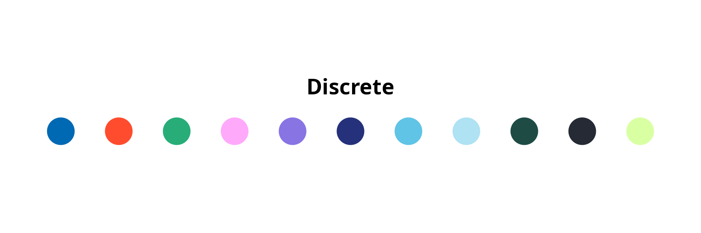
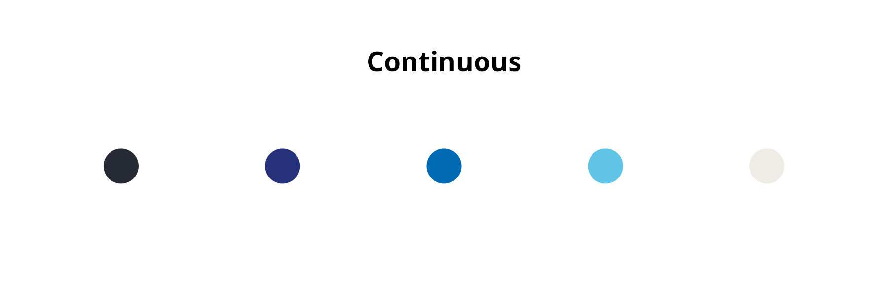
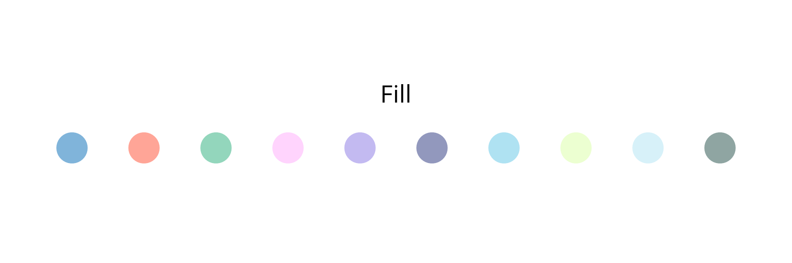

• Overview
• Features
• Installation
• Get started
• Long-form documentations
• Citation
•
Oversikt
R pakken rogfktheme er et “theme” med en fargepalett hentet fra/inspirert av fylkeskommunenes grafiske anbefalinger og ggplot theme med minimale og objektivt optimale instillinger. Pakken inkluderer også et quarto theme som kan brukes ved å inkludere følgende i yamlen: format: html: theme: - package:rogfktheme/themes/rogfk.scss
NB: Krever at RogFKs font “Apercu” er innstallert.
Features
Pakken gir fargepaletter for kontrasterende farger for diskre/kategori data, kontinuerlig data (antall nyanser tilpasses automatisk) og pastell-variant av fargepletten som egner seg til å fylle flater med ønsket farge.
Den gir også et ggplot theme med fornuftige og minimale settings.
Sist men ikke minst inkluderer pakken et quarto theme med matchende fargepalett og font.



## InstallationYou can install the development version from GitHub with:
## Install < remotes > package (if not already installed) ----
if (!requireNamespace("remotes", quietly = TRUE)) {
install.packages("remotes")
}
## Install < rogfktheme > from GitHub ----
remotes::install_github("MariusSwane/rogfktheme")Then you can attach the package rogfktheme:
Get started
For an overview of the main features of rogfktheme, please read the Get started vignette.
Citation
Please cite rogfktheme as:
Wishman Marius Swane (2026) rogfktheme. R package version 0.0.0.9000. https://github.com/MariusSwane/rogfktheme/